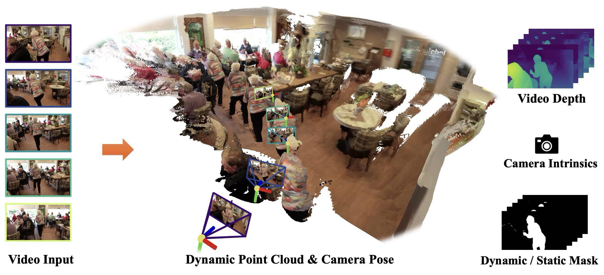
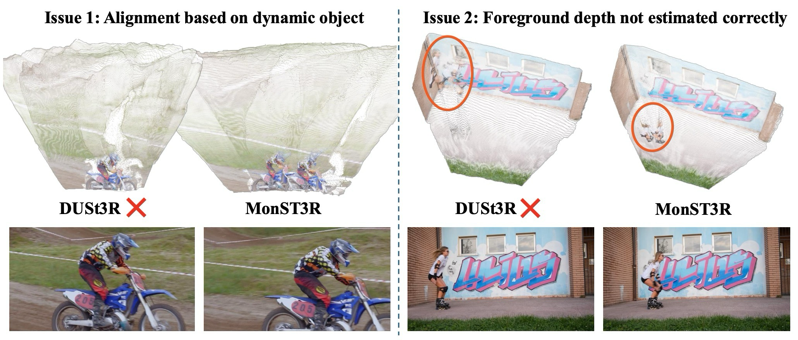
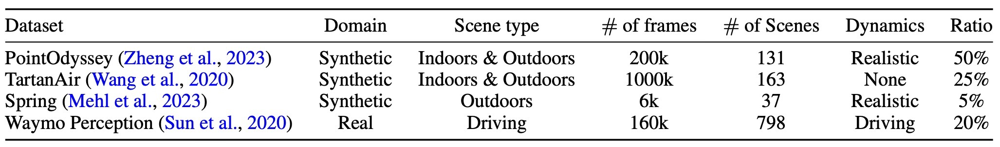
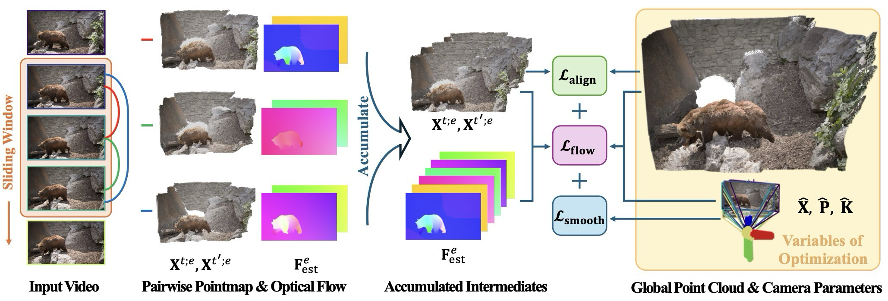
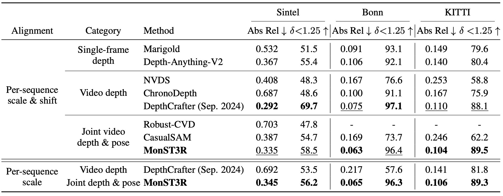
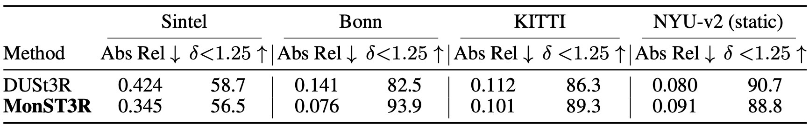
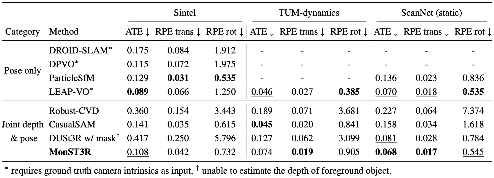
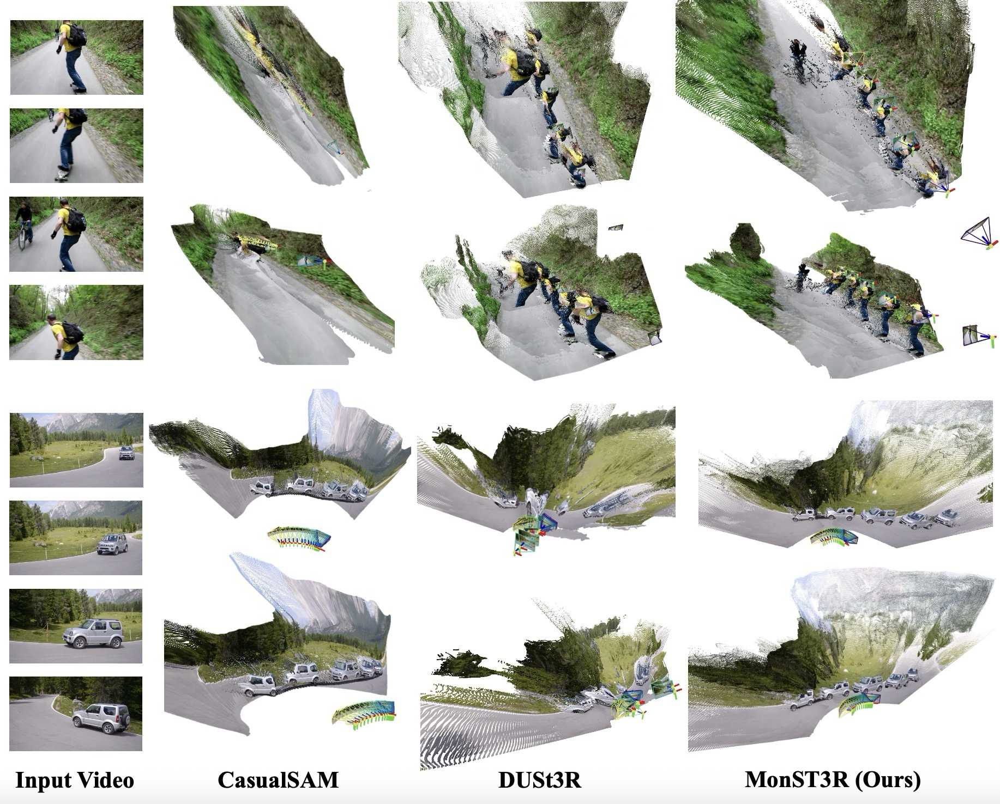
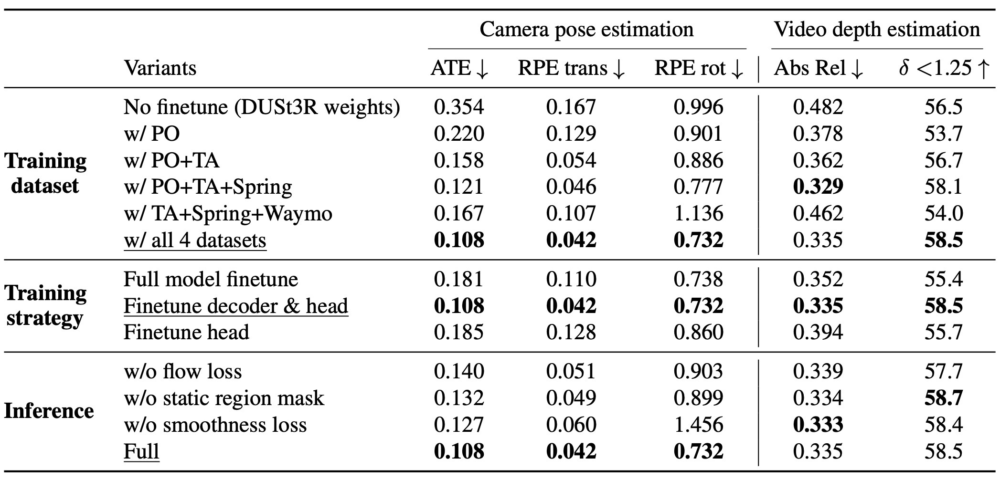

핵심 요약
MonST3R는 DUSt3R의 pointmap 표현을 dynamic video로 확장해 timestep별 geometry를 직접 예측하고, 같은 표현에서 camera pose, intrinsics, video depth, dynamic/static mask를 파생한다.
MonST3R는 dynamic video를 시간별 pointmap의 시퀀스로 보고, DUSt3R를 제한된 dynamic data로 fine-tuning한 뒤 video-specific optimization을 붙인다.
Geometry-first Dynamics
explicit motion 변수 없이 moving/deforming scene을 timestep별 pointmap으로 표현.
Data-efficient Adaptation
encoder는 고정하고 decoder/head만 제한된 dynamic posed depth video mixture로 fine-tuning.
Video Optimization
PnP pose recovery, confident static mask, global alignment, smoothness, flow consistency를 video에 맞게 추가.
Downstream Outputs
video depth, camera pose/intrinsics, dynamic/static mask, dynamic point cloud를 하나의 geometry 표현에서 도출.
핵심은 explicit motion model을 새로 붙이는 것이 아니라, geometry 자체를 시간별로 만들면 dynamic scene도 다룰 수 있는가를 묻는 점이다. static region은 전체를 묶는 anchor로만 사용된다.
분해 후 최적화
depth, flow, mask, trajectory, residual motion을 따로 추정한 뒤 global optimization으로 결합.
static pointmap prior
image pair의 aligned pointmap을 예측하지만 static-only training 때문에 moving foreground에서 실패 가능.
dynamic pointmap sequence
DUSt3R의 표현은 유지하되, 시간에 따라 geometry가 달라지는 video에 맞게 적응.
논문 상세 정리
이하에서는 배경지식, notation, 보조 유도까지 포함해 논문의 세부 내용을 살펴본다.
Problem: dynamic scene geometry를 왜 다시 정의해야 하나
MonST3R의 출발점은 dynamic video에서 geometry를 추정할 때, 기존 방식이 depth, optical flow, trajectory, motion mask 같은 하위 문제로 나눈 뒤 다시 결합하는 경우가 많다는 점이다. 이 방식은 모듈이 많고 느리며, 중간 추정의 오류가 다음 단계로 전파된다.

논문은 dynamic scene을 motion decomposition 문제로 보기보다, 시간별 geometry representation 문제로 다시 잡는다.
camera motion, object motion, deformation이 동시에 존재.
depth, flow, mask, pose를 따로 풀면 오류 전파 발생.
static-only training이 moving object와 foreground depth에서 실패.
per-timestep pointmap으로 dynamic geometry를 직접 표현.

Introduction의 핵심은 DUSt3R의 pointmap prior를 버리지 않고, dynamic data로 적응시키면 geometry-first 접근이 dynamic video에도 가능하다는 주장이다.
| 문제 | 논문의 판단 | MonST3R의 방향 |
|---|---|---|
| Motion supervision | motion annotation은 부족하고 직접 supervise하기 어려움 | motion 대신 geometry pointmap을 시간별로 예측 |
| Training data | dynamic posed depth video는 희소 | 적절한 dataset mixture와 fine-tuning 전략 사용 |
| Static prior | DUSt3R prior는 강하지만 distribution mismatch 존재 | encoder 지식은 보존하고 decoder/head만 적응 |
이 논문은 dynamic scene을 먼저 motion으로 분해하지 않는다. 대신 시간별 pointmap을 geometry의 기본 단위로 두고, static region은 여러 timestep을 묶는 정렬 anchor로 사용한다.
Related Work 흐름
Related Work는 MonST3R가 dynamic reconstruction의 복잡한 multi-stage pipeline과 static DUSt3R 사이의 간격을 메우는 방법임을 보여준다.
static epipolar constraint에 의존하므로 moving object가 많은 장면에서 취약.
depth, flow, camera, residual motion, mask를 나누어 최적화하는 경우가 많음.
temporal consistency나 pose를 개선하지만 scale/shift ambiguity와 annotation 부담이 남음.
camera-free pointmap 표현은 강하지만 static scene 중심으로 학습됨.
Mechanism: time-varying pointmap을 어떻게 만들고 묶나
MonST3R의 방법론은 DUSt3R의 backbone과 pointmap representation을 유지하되, dynamic video에 맞게 세 부분을 바꾼다. 먼저 limited dynamic dataset으로 decoder/head를 fine-tuning하고, 그 다음 pointmap에서 pose와 static mask를 회수하며, 마지막으로 global point cloud와 camera pose를 video-specific loss로 최적화한다.
핵심 흐름은 pointmap prediction → pose/static mask recovery → dynamic global optimization이다.
| 구간 | 무엇을 해결하나 | 핵심 장치 |
|---|---|---|
| Baseline | DUSt3R의 static pointmap prior 활용 | ViT encoder, decoder, pointmap head |
| Dynamic adaptation | moving object와 foreground geometry mismatch 축소 | encoder freeze, decoder/head fine-tuning |
| Pose / mask | dynamic object가 correspondence assumption을 깨는 문제 처리 | PnP-RANSAC, confident static mask |
| Global optimization | video 전체의 depth, pose, intrinsics를 일관되게 정렬 | alignment + smoothness + flow consistency |
MonST3R는 DUSt3R의 ViT encoder, cross-attention decoder, pointmap prediction head를 출발점으로 둔다. 하지만 moving mask로 dynamic region을 검게 지우거나 mask token으로 바꾸는 단순 baseline은 pose 성능을 떨어뜨린다. 논문은 이것이 DUSt3R의 training distribution 밖 입력을 만들기 때문이라고 본다.
dynamic scene에는 synchronized image, pose, depth label이 필요하지만 이런 데이터는 많지 않다. MonST3R는 PointOdyssey, TartanAir, Spring, Waymo를 섞고, encoder는 freeze한 채 decoder와 prediction head만 fine-tuning한다.

| Dataset | 역할 | sampling ratio |
|---|---|---|
| PointOdyssey | synthetic indoor/outdoor, articulated dynamic object, realistic motion | 50% |
| TartanAir | synthetic indoor/outdoor, scene diversity, no dynamic objects | 25% |
| Spring | synthetic outdoor, articulated dynamic object | 5% |
| Waymo | real driving scenes, LiDAR-based depth signal | 20% |
dynamic object는 epipolar correspondence나 Procrustes alignment assumption을 깨기 때문에, MonST3R는 same-view 2D-3D correspondence와 PnP-RANSAC으로 relative pose를 추정한다. valid correspondence는 confidence threshold로 선택한다.
relative pose와 pairwise static mask를 이해하는 데 필요한 기호를 해당 수식과 함께 정리한다.
| Notation | 의미 | 읽는 포인트 |
|---|---|---|
| \(\mathcal{I}\), \(x_i\) | confidence가 높은 correspondence pixel 집합과 reference frame의 2D pixel | PnP는 신뢰도 높은 pixel만 pose anchor로 사용. |
| \(X_i^{t';tt'}\) | pair \((t,t')\)에서 frame \(t'\)에 해당하는 3D point | relative pose 추정에 쓰이는 pairwise pointmap 값. |
| \(K_t\), \(D_t^{tt'}\), \(\hat x\) | intrinsics, pairwise depth, homogeneous pixel | camera motion만으로 예상되는 optical flow를 계산. |
| \(F_{\mathrm{cam}}^{t\to t'}\), \(F_{\mathrm{est}}^{t\to t'}\) | camera-induced flow와 estimated optical flow | 둘이 크게 다르면 moving/object deformation 가능성이 큼. |
| \(S^{t\to t'}\) | pairwise static mask | 정렬을 지탱할 static anchor pixel을 선택. |
video는 frame 수가 많기 때문에 모든 image pair를 연결하지 않고, temporal sliding window 안의 pair만 사용한다. Global pointmap은 camera extrinsics, intrinsics, depth로 reparameterize되어 pose/depth/intrinsics를 함께 최적화할 수 있다.

pairwise pointmap을 global geometry로 묶고 세 loss를 최적화할 때 쓰이는 기호를 수식 바로 아래에 둔다.
| Notation | 의미 | 읽는 포인트 |
|---|---|---|
| \(W_i\), \(e\), \(t\in e\) | temporal window, pair edge, edge 안의 frame | local window를 사용해 최적화 비용을 제한. |
| \(X^t\), \(X^{t;e}\), \(C^{t;e}\) | global pointmap, pairwise pointmap, confidence | pairwise geometry를 time-indexed global geometry에 정렬. |
| \(\sigma_e\), \(P_{t;e}\), \(P_W\) | pair scale, global transform, window pose parameter | scale과 pose를 함께 최적화해 하나의 trajectory로 연결. |
| \(S^{\mathrm{global};t\to t'}\), \(F_{\mathrm{cam}}^{\mathrm{global};t\to t'}\) | global static mask와 global camera-induced flow | static region에서 estimated flow와의 일관성을 계산. |
| \(w_{\mathrm{smooth}}\), \(w_{\mathrm{flow}}\) | smoothness loss와 flow loss의 가중치 | 전체 objective에서 각 regularization의 영향을 조절. |
MonST3R의 방법론은 DUSt3R를 완전히 새로 설계하는 것이 아니라, static pointmap prior를 dynamic video로 옮기는 데 필요한 적응을 더한다.
각 timestep의 pointmap이 moving object와 deformation을 포함한 geometry를 표현.
encoder는 보존하고 decoder/head만 dynamic posed depth data로 fine-tuning.
static mask, smoothness, flow consistency로 video-level pose/depth를 안정화.
Global flow / static mask 세부 수식
본문 Eq. (5), Eq. (6)은 global point cloud 변수 \(X\) 기준으로 쓴 핵심식이다. 여기서는 이를 계산하는 데 필요한 global camera-induced flow와 static mask 전개만 따로 확인한다.
Evidence: video depth와 pose에서 무엇을 보였나
| 구분 | 설정 | 의미 |
|---|---|---|
| Fine-tuning | DUSt3R ViT-Base decoder + DPT head, 25 epochs, 20k pairs/epoch | encoder prior 보존, dynamic scene 적응 |
| Optimizer | AdamW, learning rate \(5\times10^{-5}\), mini-batch 4/GPU | 2× RTX 6000 48GB에서 약 하루 |
| Inference | 60-frame video, window size \(w=9\), stride 2, 약 600 pairs | network inference 약 30초, global optimization 약 1분 |
Video depth는 Sintel, Bonn, KITTI에서 평가하고, single-frame depth는 NYU-v2를 포함해 평가한다. Metric은 Abs Rel과 \(\delta<1.25\)이며, video depth에서는 scale/shift 또는 scale alignment를 사용한다.


Pose 평가는 Sintel, TUM-dynamics, ScanNet에서 ATE, RPE trans, RPE rot을 Sim(3) Umeyama alignment 후 계산한다. 논문은 MonST3R가 ground-truth intrinsics 없이도 joint depth/pose 계열에서 강한 성능을 보인다고 강조한다.

DAVIS qualitative comparison에서는 camera trajectory와 dynamic scene geometry를 함께 보는 방식으로 dense reconstruction을 비교한다. Ablation은 dataset choice, fine-tuning target, flow/smooth/static-region loss가 pose와 video depth에 미치는 영향을 분리한다.


Usage / Limits: 언제 유용하고 어디서 조심해야 하나
MonST3R는 dynamic video에서 geometry와 pose를 빠르게 함께 얻고 싶을 때 잘 맞지만, long-term occlusion이나 OOD scene에서는 한계가 남는다.
| 잘 맞는 상황 | 주의할 상황 | 이유 |
|---|---|---|
| moving object가 있는 monocular video | long-term occlusion이 큰 sequence | sliding window 기반 연결성이 약해질 수 있음 |
| pose/depth/mask를 한 표현에서 얻고 싶은 경우 | dynamic intrinsics가 큰 경우 | careful hyperparameter나 manual constraint 필요 |
| feed-forward 4D reconstruction 초기화 | open field 등 OOD scene | training set coverage와 deep model generalization에 의존 |
이 논문의 최종 주장은 단순하다. Dynamic scene을 위해 복잡한 explicit motion representation을 먼저 설계하기보다, DUSt3R의 pointmap을 시간별로 확장하고 제한된 data로 잘 적응시키는 것만으로도 video depth, camera pose, dense reconstruction에서 강한 baseline이 될 수 있다.
Problem: why redefine dynamic scene geometry?
MonST3R starts from the observation that dynamic reconstruction is often split into depth, optical flow, trajectory, and motion-mask subproblems. Such systems can be slow and brittle because errors in intermediate estimates propagate into later reconstruction.
The paper reframes dynamic scenes as a time-indexed geometry representation problem rather than a motion-decomposition pipeline.
Camera motion, object motion, and deformation coexist.
Depth, flow, mask, and pose modules can propagate errors.
Static-only training fails around moving foregrounds and foreground depth.
Predict per-timestep pointmaps as the dynamic geometry representation.
The key claim is that DUSt3R’s pointmap prior can be adapted to dynamic video with targeted data and training choices.
| Issue | Paper’s view | MonST3R direction |
|---|---|---|
| Motion supervision | Motion labels are scarce and hard to supervise directly | Predict geometry per timestep instead of explicit motion |
| Training data | Dynamic posed videos with depth are limited | Use a targeted dataset mixture and fine-tuning strategy |
| Static prior | DUSt3R is strong but mismatched to dynamic scenes | Preserve encoder knowledge and adapt decoder/head |
The paper does not first decompose dynamic scenes into explicit motion. It treats per-timestep pointmaps as the geometry unit, while static regions act as alignment anchors across timesteps.
Related Work
The related work positions MonST3R between complex multi-stage dynamic pipelines and static DUSt3R pointmaps.
Static epipolar assumptions weaken in scenes with moving objects.
Often decomposes depth, flow, pose, residual motion, and masks.
Improves temporal consistency or pose, but ambiguity and annotation needs remain.
Camera-free pointmaps are strong, but trained mainly on static scenes.
Mechanism: how are time-varying pointmaps built and aligned?
MonST3R keeps DUSt3R’s backbone and pointmap representation, then adapts it in three ways: dynamic fine-tuning, pose/static-mask recovery from pointmaps, and video-specific global optimization.
The core chain is pointmap prediction → pose/static mask recovery → dynamic global optimization.
| Part | What it solves | Device |
|---|---|---|
| Baseline | Reuses DUSt3R’s static pointmap prior | ViT encoder, decoder, pointmap head |
| Dynamic adaptation | Reduces moving-object and foreground-depth mismatch | Encoder frozen, decoder/head fine-tuned |
| Pose / mask | Handles broken correspondence assumptions in dynamic regions | PnP-RANSAC, confident static mask |
| Global optimization | Aligns video depth, pose, and intrinsics consistently | Alignment + smoothness + flow consistency |
MonST3R starts from DUSt3R’s ViT encoder, cross-attention decoder, and pointmap head. Simply masking moving regions with black pixels or mask tokens degrades pose because those inputs are out of DUSt3R’s training distribution.
Dynamic training needs synchronized images, pose, and depth, but such data is limited. MonST3R mixes PointOdyssey, TartanAir, Spring, and Waymo, freezes the encoder, and fine-tunes the decoder and prediction head.
| Dataset | Role | sampling ratio |
|---|---|---|
| PointOdyssey | Synthetic indoor/outdoor, articulated dynamic object, realistic motion | 50% |
| TartanAir | Synthetic indoor/outdoor, scene diversity, no dynamic objects | 25% |
| Spring | Synthetic outdoor, articulated dynamic object | 5% |
| Waymo | Real driving scenes, LiDAR-based depth signal | 20% |
Dynamic objects violate epipolar and Procrustes assumptions, so MonST3R estimates relative pose with same-view 2D-3D correspondence and PnP-RANSAC. Valid correspondences are selected by confidence thresholding.
These symbols are placed next to the relative-pose and pairwise-static-mask equations where they are first needed.
| Notation | Meaning | How to read it |
|---|---|---|
| \(\mathcal{I}\), \(x_i\) | Confident correspondence pixels and 2D pixel in the reference frame | PnP uses only reliable pixels as pose anchors. |
| \(X_i^{t';tt'}\) | 3D point for frame \(t'\) in pair \((t,t')\) | Pairwise pointmap value used for relative pose estimation. |
| \(K_t\), \(D_t^{tt'}\), \(\hat x\) | Intrinsics, pairwise depth, and homogeneous pixel | Used to compute optical flow induced by camera motion alone. |
| \(F_{\mathrm{cam}}^{t\to t'}\), \(F_{\mathrm{est}}^{t\to t'}\) | Camera-induced flow and estimated optical flow | A large discrepancy indicates likely moving objects or deformation. |
| \(S^{t\to t'}\) | Pairwise static mask | Selects static anchor pixels for alignment. |
Rather than connecting every frame pair, MonST3R uses pairs inside temporal sliding windows. The global pointmap is reparameterized by camera extrinsics, intrinsics, and depth, enabling joint optimization.
These symbols sit with the global alignment and optimization equations where they are used.
| Notation | Meaning | How to read it |
|---|---|---|
| \(W_i\), \(e\), \(t\in e\) | Temporal window, pair edge, and frame inside the edge | Local windows limit optimization cost. |
| \(X^t\), \(X^{t;e}\), \(C^{t;e}\) | Global pointmap, pairwise pointmap, and confidence | Aligns pairwise geometry with time-indexed global geometry. |
| \(\sigma_e\), \(P_{t;e}\), \(P_W\) | Pair scale, global transform, and window pose parameters | Joint scale and pose optimization connects one trajectory. |
| \(S^{\mathrm{global};t\to t'}\), \(F_{\mathrm{cam}}^{\mathrm{global};t\to t'}\) | Global static mask and global camera-induced flow | Measures consistency with estimated flow on static regions. |
| \(w_{\mathrm{smooth}}\), \(w_{\mathrm{flow}}\) | Weights for smoothness and flow losses | Controls each regularizer in the full objective. |
MonST3R does not redesign DUSt3R from scratch; it adds the adaptations needed to move a static pointmap prior into dynamic video.
Each timestep’s pointmap represents geometry including moving objects and deformation.
Preserve the encoder and fine-tune decoder/head on dynamic posed depth data.
Use static masks, smoothness, and flow consistency to stabilize video-level pose/depth.
Global flow / static mask derivation
Main-text Eq. (5) and Eq. (6) are the core losses written over \(X\). This supplement keeps only the global camera-induced flow and static-mask expansions needed to compute them.
Evidence: what does it show on depth and pose?
| Part | Setting | Meaning |
|---|---|---|
| Fine-tuning | DUSt3R ViT-Base decoder + DPT head, 25 epochs, 20k pairs/epoch | Preserve encoder prior and adapt to dynamics |
| Optimizer | AdamW, learning rate \(5\times10^{-5}\), mini-batch 4/GPU | About one day on 2× RTX 6000 48GB |
| Inference | 60-frame video, window size \(w=9\), stride 2, about 600 pairs | About 30s inference and about 1min global optimization |
Video depth is evaluated on Sintel, Bonn, and KITTI; single-frame depth also includes NYU-v2. Metrics are Abs Rel and \(\delta<1.25\), with scale/shift or scale alignment for video depth.
Pose is evaluated on Sintel, TUM-dynamics, and ScanNet with ATE, RPE trans, and RPE rot after Sim(3) Umeyama alignment.
The DAVIS qualitative comparison evaluates camera trajectory and dynamic geometry together. The ablation isolates datasets, fine-tuning target, and video-specific losses.
Usage / Limits: when is it useful?
MonST3R is useful when video depth, pose, masks, and dynamic geometry should come from one representation, but long occlusion and OOD scenes remain difficult.
| Works well | Be careful with | Reason |
|---|---|---|
| Monocular videos with moving objects | Sequences with long-term occlusion | Sliding-window connectivity can weaken |
| Joint pose/depth/mask from one representation | Strong dynamic intrinsics | Careful hyperparameters or manual constraints may be needed |
| Feed-forward 4D reconstruction initialization | OOD scenes such as open fields | Depends on training coverage and deep generalization |
The final claim is direct: instead of first designing a complex explicit motion representation, MonST3R adapts pointmaps over time and becomes a strong baseline for video depth, camera pose, and dense dynamic reconstruction.